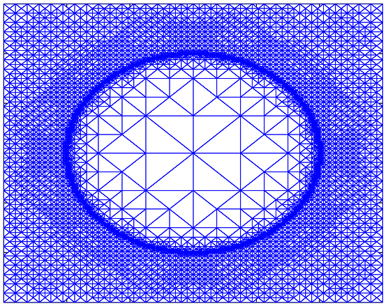
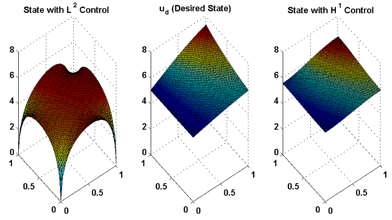
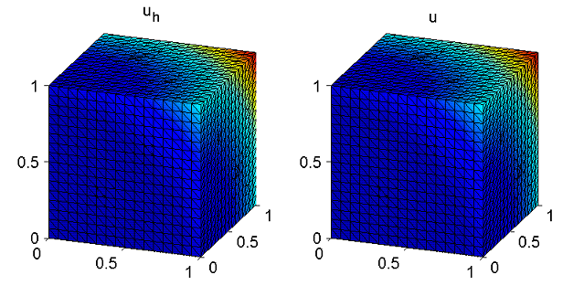
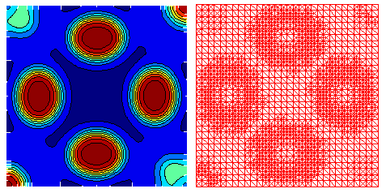

|
WELCOME to My HOME PAGE |
|
Prof. Thirupathi Gudi
Associate Professor Department of Mathematics Indian Institute of Science Bangalore -560 012 Phone: +91 - 80 - 2293 3208 E-mail: gudi [AT] math.iisc.ernet.in |

|
WELCOME to My HOME PAGE
Prof. Thirupathi Gudi
Associate Professor
Department of Mathematics
Indian Institute of Science
Bangalore -560 012
Phone: +91 - 80 - 2293 3208
E-mail:
gudi [AT] math.iisc.ernet.in
Home |
Academic |
Teaching |
Research |
Publications |
| My research interests are to develope, analyze and implement the finite element based numerical methods for partial differential equations. Some of my recent work has been on the study of finite element methods for variational inequalities, optimal control problems, error estimates with minimal regularity and their a posteirori error control. | |
Adaptive Finite Element Methods : Adaptive mesh refinement around freeboundary  | |
| Dirichlet Boundary Optimal Control Problem: Comparison of states with L^2 and H^1 Dirichlet boundary controls  | |
| 3D-Problems: Solving obsatcle problem in 3D domains  | |
| Space-Time Adatpive Methods: Solution of Cahn-Hillard problem on adaptive mesh  |